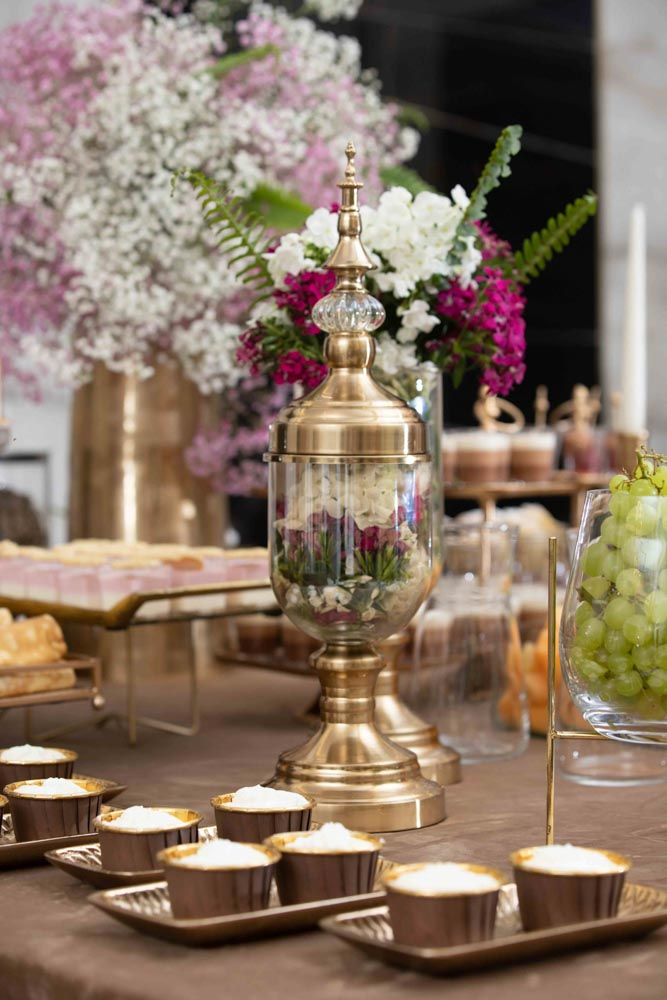
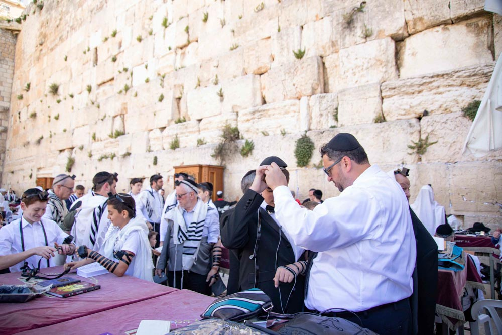
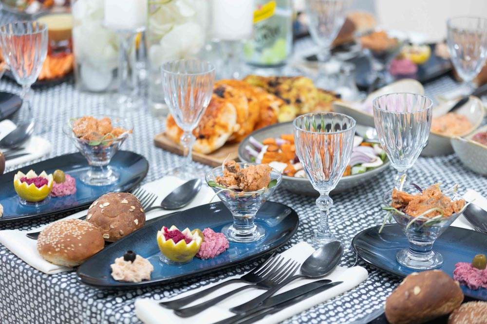
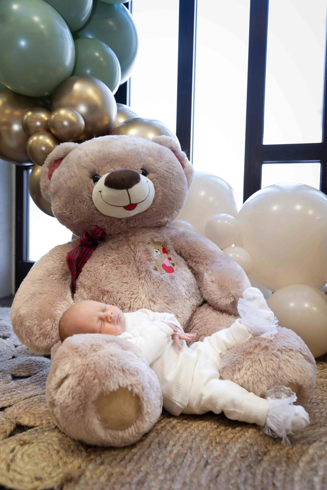
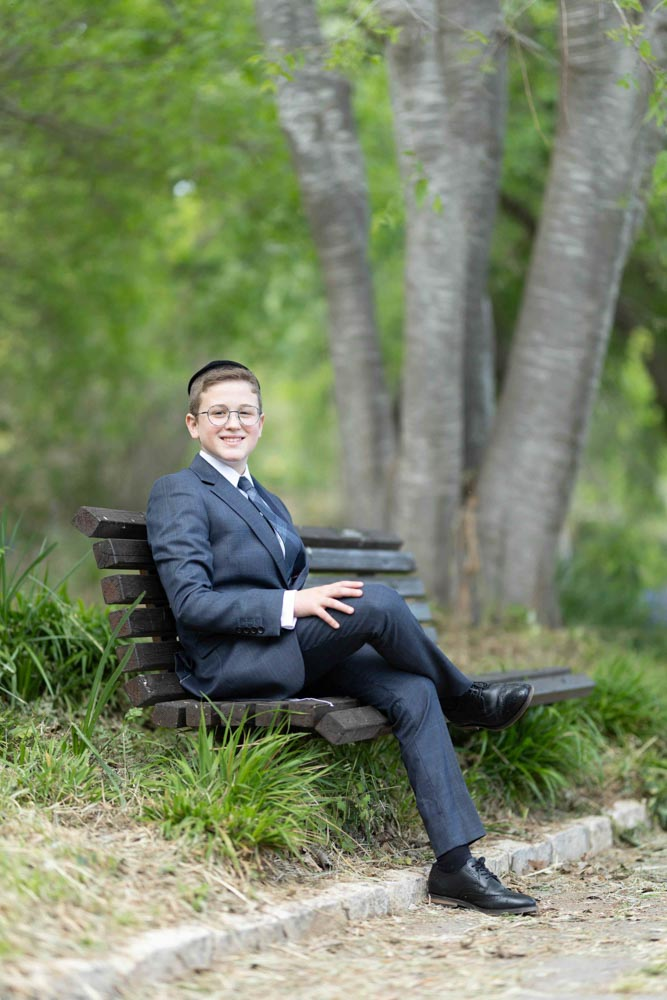
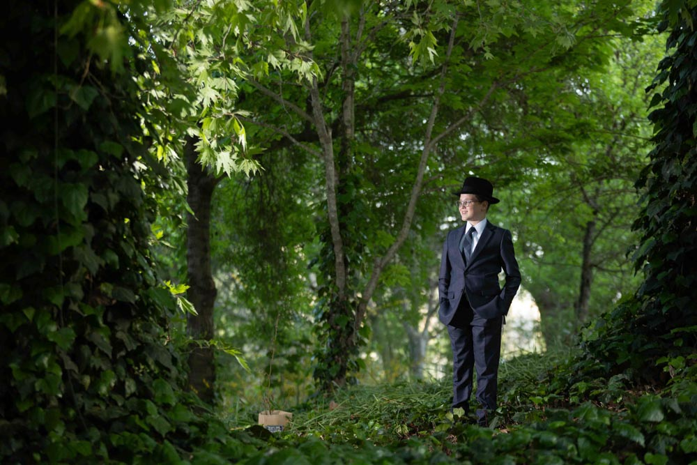
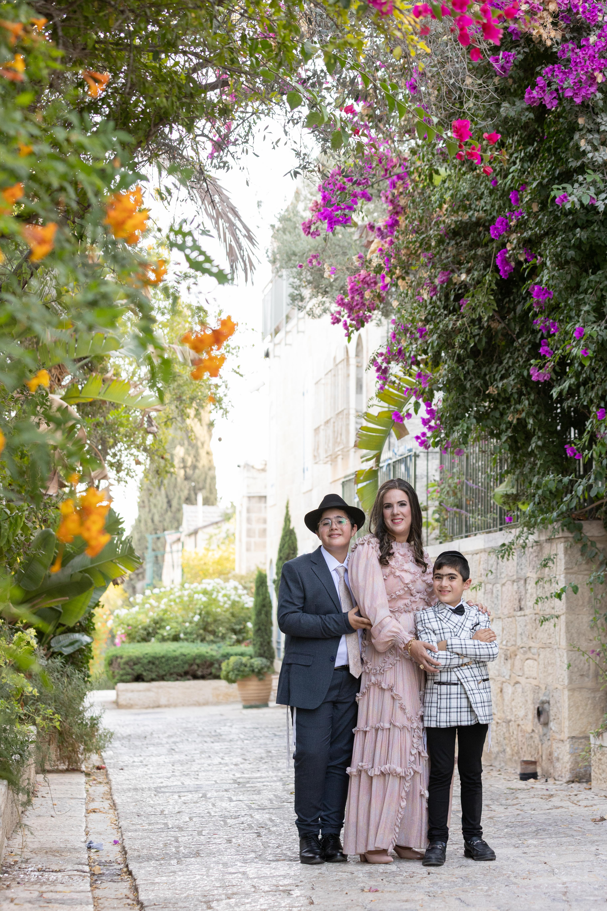

Family Events
Full documentation of peak moments, smiles, and human connections in all types of celebrations.
View Events







Your event happens once. I'm here to ensure the memories stay with you – forever.
Hundreds of events and emotional moments captured across Israel, with special expertise in Jerusalem and the Western Wall.
Your peace of mind is my priority. Every photo is backed up in real-time and in two different locations after the event.
No need to wait for weeks. Your full digital gallery will be ready within just 4 business days.
I accompany you from the first call to the final album, with full sensitivity to your traditions and needs.
Full documentation of peak moments, smiles, and human connections in all types of celebrations.
View EventsThe beauty of the world through my lens - from journeys in Israel to magical corners of the globe.
View TravelUnique expertise in Aliyah LaTorah photography. Sensitivity to tradition at the Western Wall.
View Kotel GalleryEvery event starts with a personal chat. We discuss your expectations, the atmosphere you want to create, and the key moments you don't want to miss.
I arrive 20 minutes before the official start time to scout the location, check the lighting, identify the best angles, and ensure all equipment is fully ready.
We start when energy is high, clothes are perfect, and the mood is great. I organize everyone naturally and comfortably, capturing both posed and candid moments.
Documenting first hugs, warm greetings, and the emerging atmosphere. I am present but unobtrusive, allowing guests to feel natural.
Capturing the mood around the tables, the conversations, and the connections. Every table is a small world I aim to document.
I strive not to miss a single beat. My eyes are on the dance floor, capturing pure joy and magical, spontaneous moments.
Documenting new guests, intimate moments, and the connection between generations. I'm always looking for the story behind the photo.
Just before the end, we capture everyone together again with all the energy and joy of a successful event.
Immediately at home, I perform a double backup of all photos. Then, each photo undergoes professional editing: lighting, color, and quality enhancement.
Within 4 days, you'll receive a link to an organized digital gallery, convenient for viewing, downloading, and sharing.
No time pressure. You browse the gallery at your own pace and choose the photos you love most for your album.
A professional graphic designer prepares an initial draft, shares it with you, and makes adjustments until you are 100% satisfied.
Highest quality printing, durable binding, and direct delivery to your doorstep.
The moment memories become tangible. I hope these photos remind you not just how it looked, but how it felt.
Prices vary based on the type of event and duration. For a precise and personalized quote, please contact me and you will receive all the updated details immediately.
What's included in the package?Absolutely! If you book more than one event or book several months in advance, there's room for a discount. Let's talk!
The earlier, the better. Peak season dates fill up fast. I recommend booking at least 2-3 months ahead.
What if I need to change the date?I understand things change. If you need a date change, I'll try to accommodate. Please update me as soon as possible.
Top-tier professional equipment that performs in all lighting conditions, allowing for sharp close-ups, powerful zoom without loss of quality, cinematic portraits, and wide landscapes. I always bring backup gear.
Do you come alone or with an assistant?For most events, I come alone. For large events or if video is requested, I bring a professional videographer.
How do you know which moments to capture?After 7 years, I identify moments before they happen. We also talk in advance about the moments most important to you.
I arrive 20 minutes before the start to prep gear and check lighting.
When will I get the photos?Within 4 days of the event, you'll receive a link to a full gallery with all edited photos.
How long does the printed album take?After photo selection and design approval, the printing and binding process takes 2-3 weeks.
Natural and authentic: warm colors, balanced lighting, professional sharpening, without excessive filters.
Can I request changes to photos?Certainly. If a photo needs an adjustment, we'll make it until you're satisfied.
Do you retouch photos?Basic retouching (lighting, colors) is included.
Because everyone is high energy, clothes are clean, the mood is good, and there's time to organize everyone without pressure.
Can you take specific family combinations?Yes, tell me in advance which combinations you want and I'll make sure to capture them all.
I specialize in stills but work with professional videographers who can be added to the event.
I arrive with backup gear and swap within seconds if needed.
How do you backup photos?Double backup: an external hard drive and a secure cloud, so no moment is ever lost.
I'm based in Jerusalem and travel nationwide. For international events, we'll coordinate travel and accommodation costs.
Yes! I work with a high-quality print house providing prints on paper or canvas.
Can I buy additional albums?Certainly. Duplicate albums for parents or grandparents at a lower price since the design already exists.
The easiest way is phone or WhatsApp. I usually reply within minutes to a few hours.
📞 Yair Rozenberg | 053-3468597
I'd love to hear about your event and plan the perfect documentation together.
Price List & Details
Events
Returning Clients
Cities in Israel
Satisfaction